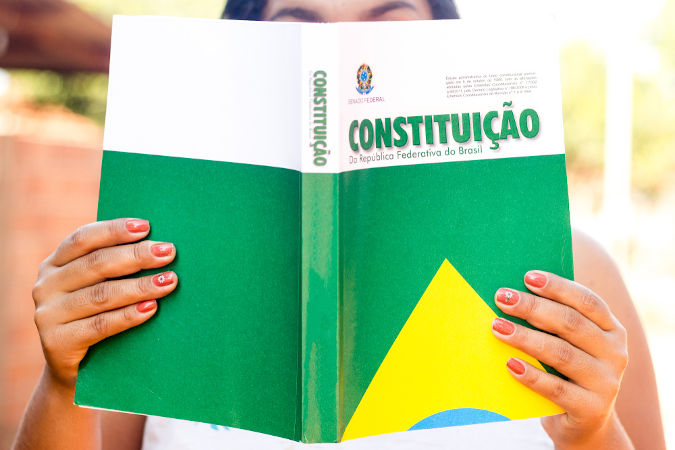

Apresentação
Garantir atenção privilegiada ao tema da primeira infância deve estar entre os principais compromissos da administração municipal. Desde o restabelecimento da ordem democrática, essa é uma importante diretriz na formação de uma sociedade mais justa e solidária.
Ao longo do século XXI, a crescente percepção da relevância do papel das crianças no contexto social tem orientado o desenvolvimento de estudos e propostas cada vez mais significativas para elas. No Brasil, temos relevantes exemplos de normas balizadoras das concepções de infância e garantia de direitos, como o Estatuto da Criança e do Adolescente (1990), a Lei de Diretrizes e Bases da Educação Nacional - LDB (1996) e a própria Constituição Federal de 1988.
O mais recente marco nessa mudança de paradigma foi a criação do Plano Nacional pela Primeira Infância, no ano de 2010. Anos mais tarde, em 2016, ele levou à criação do Marco Legal da Primeira Infância (Lei Federal nº 13.257/2016).
Dessa forma, o Programa Primeira Infância Campineira (PIC) constitui o Plano Municipal para a Primeira Infância. A iniciativa tem como referencial principal o próprio Plano Nacional, legitimando o repasse de recursos do Fundo Municipal dos Direitos da Criança e do Adolescente (FMDCA), a fim de atender ao Artigo 260 do ECA.
§ 1º. Na definição das prioridades a serem atendidas com os recursos captados pelos fundos nacional, estaduais e municipais dos direitos da criança e do adolescente, serão consideradas as disposições do Plano Nacional de Promoção, Proteção e Defesa do Direito de Crianças e Adolescentes à Convivência Familiar e Comunitária e as do Plano Nacional pela Primeira Infância.
A mobilização para colocar o PIC em prática começou em 2017. Na oportunidade, foi constituído o Conselho Municipal dos Direitos da Criança e do Adolescente (CMDCA), responsável pela coordenação do projeto (Decreto nº 19.654, de 11/10/2017).
O principal objetivo é pensar e planejar a cidade para as crianças de zero a seis anos de idade para os próximos dez anos, de modo articulado por diversas esferas do poder público e da sociedade civil.
A coordenação executiva do PIC é formada por profissionais das áreas da Assistência Social, da Educação e da Saúde. Assim, busca-se integrar os serviços e políticas públicas no município em favor das demandas mais importantes para a infância.
Para uma atuação sistematizada, foram definidos 12 eixos temáticos para as ações do PIC, alinhados com as demandas do município:
- A Família e a Comunidade da Criança
- Crianças na Diversidade
- Crianças com Saúde
- Educação Infantil
- Assistência Social às Crianças e suas Famílias
- Atenção Integral às Crianças e suas Famílias em Situação de Violência
- Do Direito de Brincar ao Brincar de todas as Crianças
- A Criança e o Espaço – a cidade e o meio ambiente
- Protegendo as Crianças da Pressão Consumista
- Controlando a Exposição Precoce das Crianças às Mídias Eletrônicas e Digitais
- Evitando Acidentes na Primeira Infância
- Aleitamento Materno e Alimentação Saudável
Em seus primeiros trabalhos, o CMDCA se encarregou de promover debates sobre esses temas nas diferentes regiões da cidade e buscando integrar vários setores da sociedade. Foram estimuladas discussões nas escolas, nas unidades de saúde, nos serviços socioassistenciais, de cultura, de esporte, entre outros.
Nessas oportunidades, as propostas levantadas pelos representantes foram socializadas, debatidas e agregadas à deliberação final do Programa. Ao final desse processo de construção coletiva, foram analisadas e categorizadas cerca de 1300 propostas, que fundamentaram cada eixo temático de atuação.
Com o Programa Primeira Infância Campineira, espera-se oferecer a toda comunidade campineira um sólido e bem delineado planejamento para os próximos dez anos, no qual a união das políticas chegue para todas as crianças, especialmente àquelas em situação de vulnerabilidade social.